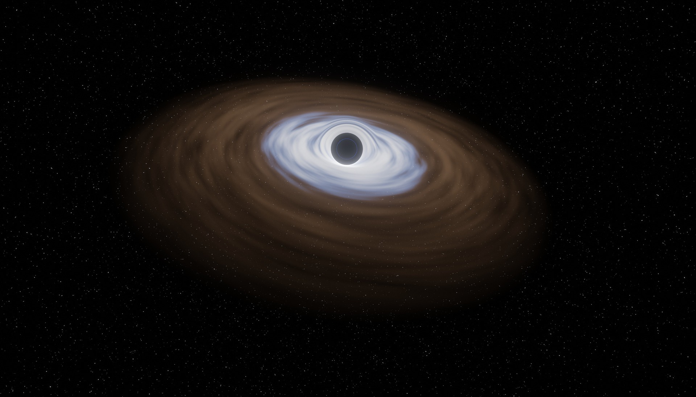

Щільна смуга яскравих зірок у спіральній галактиці NGC1097 функціонує як галактична супершосе, транспортуючи речовину від зовнішніх країв галактики до її жахливої центральної чорної діри.
Нове дослідження показує, що остання частина цієї подорожі через внутрішню область галактики займає лише близько 200 000 років, набагато менше, ніж вважалося раніше.

Відкриття було представлено минулого тижня на 207-му засіданні Американського астрономічного товариства.
Коли речовина досягає галактичного центру, вона стає паливом для чорної діри та вихідним матеріалом для утворення нових зірок.
NGC1097 — це спіральна галактика, розташована на відстані приблизно 47 мільйонів світлових років від нас у південному сузір’ї Fornax. Використовуючи космічний телескоп Хаббл і Південний телескоп Джеміні в Чилі, дослідники змогли зазирнути в радіус 10 світлових років від її галактичного ядра – у десять разів ближче, ніж попередні спостереження.
«Роздільна здатність цих даних є безпрецедентною», — сказала Таїса Сторчі Бергманн з Інституту Фізики в Бразилії, яка брала участь у дослідженні. «Це малює неймовірно детальну картину регіону навколо чорної діри і дає нам новий погляд на те, про що ми могли лише уявити раніше».
Зібравши спектральні дані в кількох тисячах точок поблизу центру NGC1097, дослідники також змогли визначити швидкість потоку газу всередину до надмасивної чорної діри галактики. Вони прийшли до висновку, що він рухався зі швидкістю близько 110 000 миль на годину і що йому знадобилося близько 200 000 років, щоб подолати 20 світлових років, набагато швидше, ніж попередні оцінки.